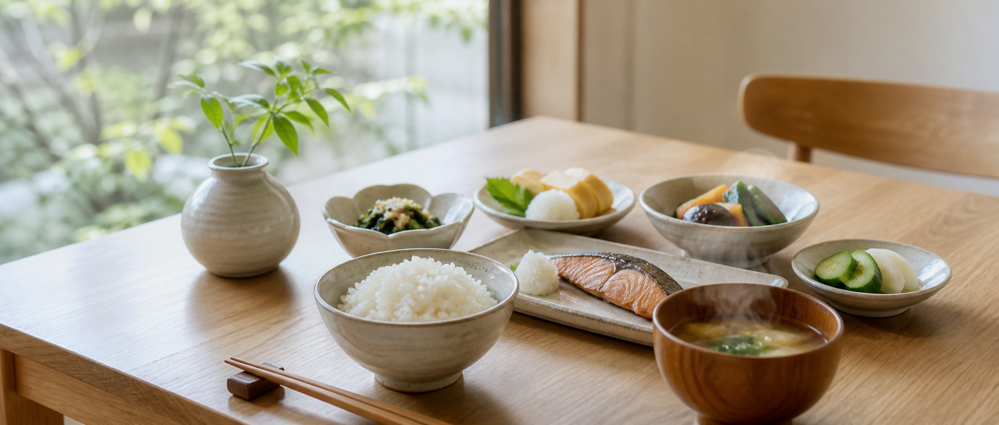
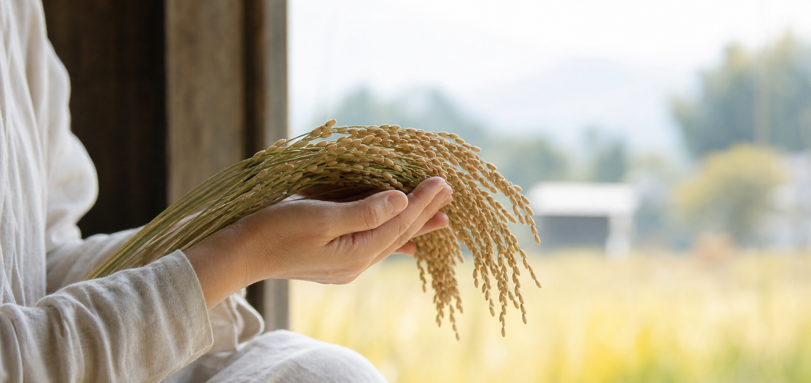
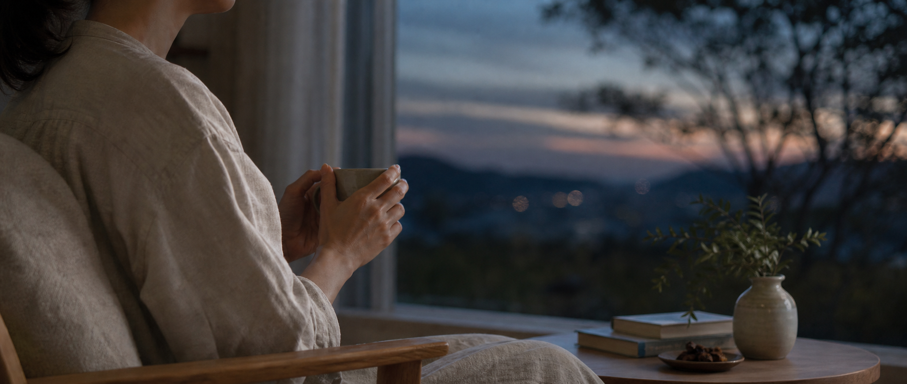
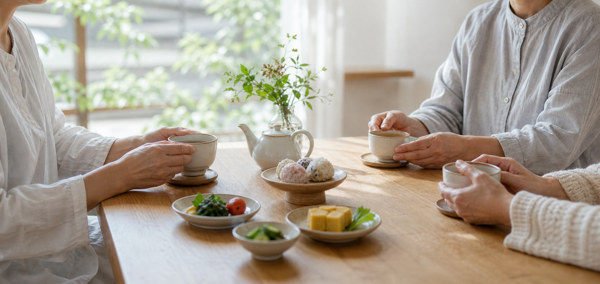

Food
食
整った食卓から、日々のからだをやさしく支える。
MUSUBU WELLNESS CIRCLE
食・動・美・心の調和から、
毎日の暮らしをやさしく整える。




Philosophy
食べること、動くこと、整えること、休むこと。 その小さな積み重ねを、人とのつながりの中で。
ABOUT
一般社団法人 結は、あわじ結びの想いを大切に、 食・動・美・心から健康づくりを支える団体です。
FOUR ELEMENTS
整った食卓から、日々のからだをやさしく支える。
無理のない動きで、心身にしなやかな巡りをつくる。
整える時間を、自分らしく健やかに過ごす力へ。
休むこと、話すこと、深く息をすることを大切に。
ACTIVITIES
食、運動、セルフケア、休養を、日常に持ち帰れる小さな体験へ。
マルシェ、講座、対話の時間を通じて、地域の中にゆるやかなつながりをつくります。
企業、自治体、専門家、クリエイターとともに、健康づくりの場を形にします。
Join Us
PARTNERSHIP
まだ形になる前の想いを、対話しながら企画へ。 講座、地域連携、福利厚生などをご相談ください。